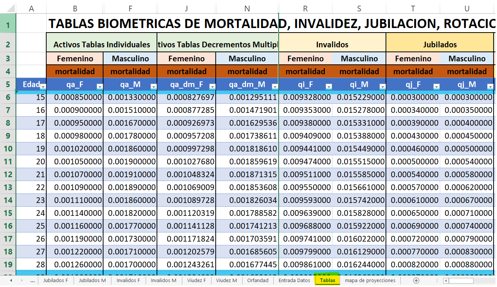
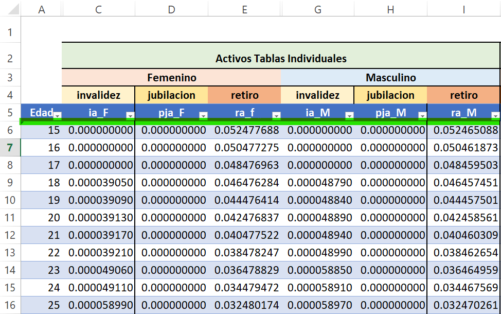
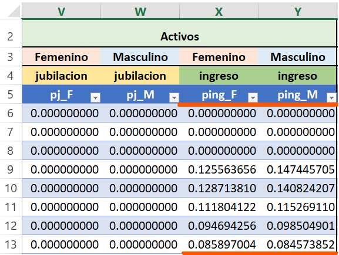
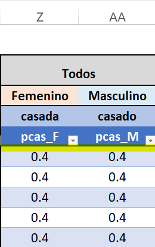
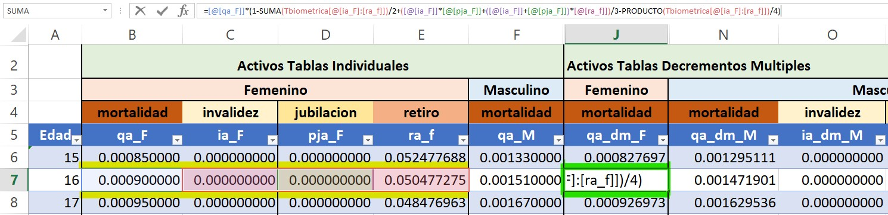
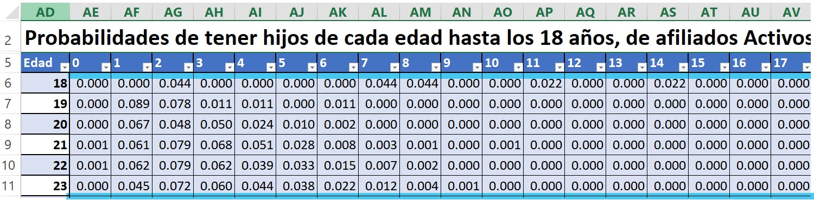
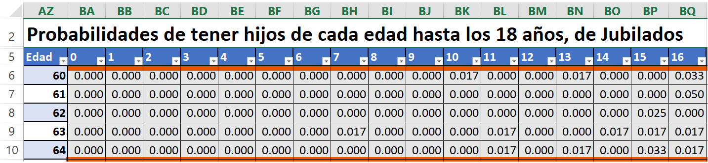
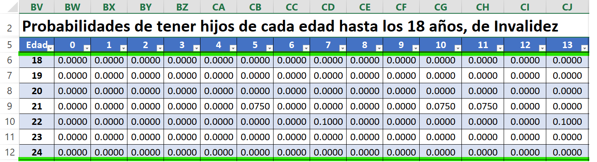
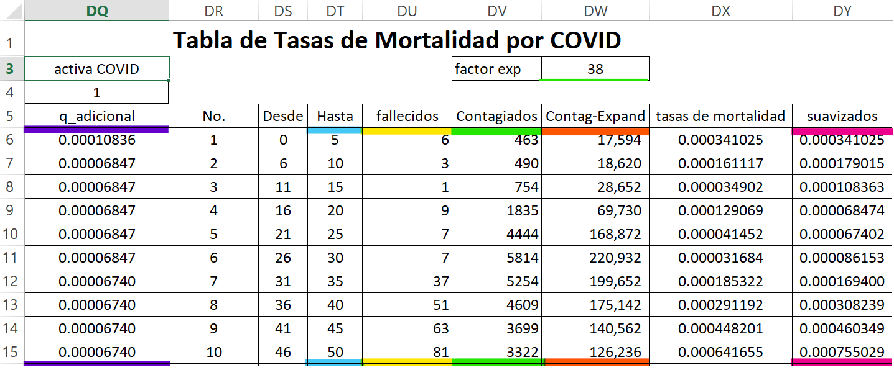
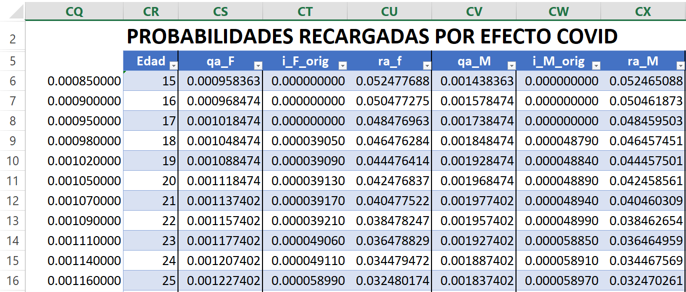

4 Tablas Biométricas
4.1 [Tablas]
En esta sección nos encontramos con las distribuciones de probabilidad según el estado del afiliado (Activo, Jubilado, Invalidez, Retiro, Ingreso, Casado) por edad, a esta tabla se le ha llamado “Tbiometrica”, también incluimos dentro de esta, la sección de decrementos múltiples y para este estudio en particular de 2022 se tomaron en cuenta las probabilidades y tasas de mortalidad por efecto del SARS-Cov-19 (Enfermedad por Coronavirus). Las probabilidades según el estado del afiliado son extraídas conforme a lo indicado en la Circular SPV No. 11/2017, Memorando UNYS No. 1166-2017, sobre el uso de Tablas Biométricas:
- Tabla de participantes activos
- Tabla de jubilación estimada de los datos históricos del IHSS
- Tabla de ingresos estimada de los datos históricos del IHSS
- Mortalidad: 1980 Commissioners Standar Ordinary (CSO) – Formerly Table K (F). Base: Age Nearest Birthday.
- Invalidez: 1968-72 Total and Permanent Disability (50% basis) Table – Base: Age: Nearest Birthday
- Rotación y despido: Tabla de mortalidad JONHIG
- Tablas para pensionados
- Mortalidad jubilados: Tabla de Mortalidad de Rentistas, Instituto de Seguros Sociales (TCMR ISS) 1980-1989
- Mortalidad para inválidos: Tabla de mortalidad de inválidos, Superintendencia Bancaria de Colombia, Resolución 0585 de 1994
- Tablas de probabilidad que un afiliado este casado corresponde al valor promedio del comportamiento histórico de los datos del IHSS.
4.1.1 Mortalidad
Estos bloques de información son las de mayor interés dentro del análisis ya que nos permite estudiar los fallecimientos por sexo y edad.
- [qa_X] probabilidad de que un activo de género X fallezca.
- [qi_X] probabilidad de que un inválido de género X fallezca.
- [qj_X] probabilidad de que un jubilado de género X fallezca.

4.1.2 Salida
En esta sección se incluyen las probabilidades de dejar de formar parte de los cotizantes activos ya sea por retiro, jubilación o invalidez.
- [ra_X] probabilidad que un activo de género X se retire.
- [pja_X] probabilidad que un activo de género X se jubile.
- [ia_X] probabilidad que un activo de género X se invalide.

En esta sección se toman en cuenta las probabilidades que tiene un afiliado de ingresar al sistema
- [ping_X] probabilidad que un afiliado de género X ingrese al sistema.

4.1.3 Estado Civil
Aquí se consideran las probabilidades que un afiliado este casado o casada, esta distribución será la misma para ambos sexos y para todas las edades.
- [pcas_X] probabilidad de que un afiliado de género X este casado.

4.1.4 Decrementos Múltiples
Aquí se toman en cuenta las probabilidades de que un afiliado abandone el sistema por una única causa (Muerte, Vejez, Invalides, Retiro), para ello se hace uso de la fórmula 2.1 para estimar probabilidades de los decrementos múltiples que se encuentra en (Nota Técnica de Proyección de Flujos del Régimen del Seguro de Previsión Social, a diciembre 2020):
\[\begin{align} q_x^{(k)} &= q_x^{\prime(k)} \left( 1-\frac{\sum_{i=1,i\neq k}^{4}q_x^{\prime(i)}}{2} + \frac{q_x^{\prime(k+1)}\times q_x^{\prime(k+2)}+\left(q_x^{\prime(k+1)}+q_x^{\prime(k+2)}\right)\times q_x^{\prime(2+3)}}{3}\right.\nonumber \\ &\qquad \left.\vphantom{\int_t} -\frac{\prod_{i=1,i\neq k}^{4}q_x^{\prime(i)}}{4} \right) \end{align}\]Donde:
\(q_x^{(i)}\): probabilidad de salir del grupo por la causa i para una persona de edad x.
\(q_x^{\prime(i)}\): probabilidad individual de salir de un grupo por la causa i para una persona de edad x.
\(i\): causa de salida, \(i=1,2,3,4...\)
Nota: entiéndase la notación siguiente como \((i+x)=modulo(i+x,4)\)
[qa_dm_X] probabilidades de decremento múltiple de que un activo de género X fallezca.
[ia_dm_X] probabilidad de decremento múltiple de que un activo de género X se invalide.
[pja_dm_X] probabilidad de decremento múltiple de que un activo de género X se jubile.
[ra_dm_F] probabilidad de decremento múltiple de que un activo de género X se retire.
A continuación se muestra un ejemplo de decrementos múltiples para el caso de la mortalidad para cotizantes activos de sexo femenino:
\[=[@[qa_F]]*(1-SUMA(Tbiometrica[@[ia_F]:[ra_f]])/2+\] \[([@[ia_F]]*[@[pja_F]]+([@[ia_F]]+[@[pja_F]])*[@[ra_f]])/3\] \[-PRODUCTO(Tbiometrica[@[ia_F]:[ra_f]])/4)]\]

4.1.5 Probabilidades de Tener Hijos de Cada Edad Hasta los 18 Años
- Afiliados Activos: esta tabla contiene las probabilidades de tener hijos de las distintas edades para afiliados activos de edad x, a esta tabla se le ha llamado “Tphijos_A”

Jubilados: esta tabla contiene las probabilidades de tener hijos de las distintas edades por edad de jubilados, a esta tabla se le ha llamado “Tphijos_J”.

Probabilidad que un jubilado tenga hijos Invalidez: esta tabla contiene las probabilidades de tener hijos de las distintas edades por edad de afiliados inválidos, a esta tabla se le ha llamado “Tphijos_I”.

4.1.6 Tasas de Mortalidad y Probabilidades por Efecto COVID-19
Para el Estudio Actuarial con cifras a Diciembre de 2020 se consideraron los efectos en las tasas de mortalidad y sus respectivas probabilidades a causa de la pandemia por COVID-19. En la tabla de tasas de mortalidad por COVID se incluyen valores como el rango de edad de las personas, el número de fallecidos para cada uno de los rangos de edad, el número de contagios, los contagios que se esperan alcanzar y las respectivas tasas de mortalidad
- La columna \('DW'\) llamada [Contag-Expand], lo que realiza es un producto con cada fila de la columna \('DV'\) llamada [Contagios] y el [factor_exp] cuyo valor constante es 38.
\[[DW_i={DV}_i \ast factor\_exp]\] Donde i es la fila del archivo en Excel.
- La columna \('DX'\) llamada [tasas_de_mortalidad] se determina realizando el cociente de cada uno de los valores de la columna \('DU'\) llamada [fallecidos] y [Contg_Expand].
\[[DX_i={DU}_i/{DW}_i]\]
- La columna \('DY'\) llamada [suavizados] se estima realizando un promedio del valor anterior y el siguiente de la [tasas_de_mortalidad] a excepción del primer y último valor que se coloca el mismo valor.
\[DY_i=PROMEDIO({DX}_{i-1}:{DX}_{i+1})\]
- La columna \('DQ'\) llamada [q_adicional] es el factor adicional que se establecerá a las tablas de mortalidad recargadas por COVID-19, este se estima haciendo uso de la siguiente formula:
\[DQ_i=INDICE(\$DY\$6:\$DY\$27,COINCIDIR(Tcovid[@Edad]-1,\] \[\$DT\$6:\$DT\$27,1)+1,1)*\$DQ\$4\]
**INDICE esta se encarga de devolver el valor de una celda dentro de la columna [suavizados] en la posición de la fila y/o la columna que ocupa dentro de ella.
**COINCIDIR busca la edad de los afiliados en el intervalo de celdas llamado [Hasta] y después devuelve la posición relativa de dicho elemento en el rango.

NOTA: esta sección fue tomada para el análisis del Estudio Actuarial con cifras a diciembre 2020 por la pandemia COVID-19, en otros estudios estos valores no son tomados en cuenta.
A la tabla de probabilidades recargadas por COVID-19 se le ha llamado “Tcovid” y este valor resulta de la suma de las tablas biométricas de mortalidad ([qa], [qi] y [qj]) “Tbiometrica” más el valor calculado en la tabla de tasas de mortalidad por COVID-19 llamada [q_adicional].
\[=Tbiometrica[@[q]]+DQ_i]\]
